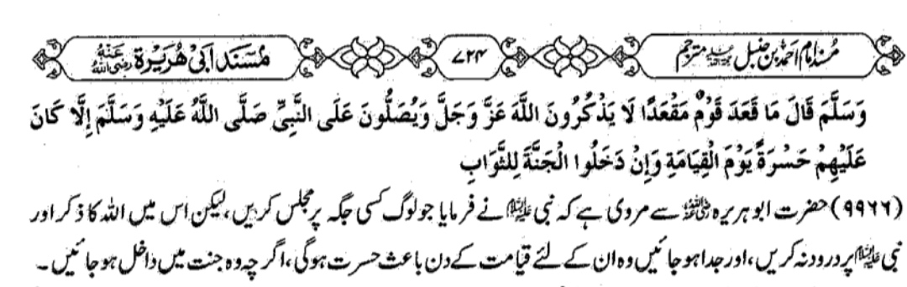

سنن نسائی 1284
آپ نے فرمایا :’’ میرے پاس ایک فرشتہ آیا اور اس نے کہا :’’ اے محمد !
تحقیق آپ کا رب تعالیٰ فرماتا ہے : کیا آپ کو یہ بات پسند نہیں کہ جو شخص
بھی آپ پر درود پڑھے گا ، میں اس پر دس دفعہ رحمت کروں گا ؟ اور جو بھی آپ
پر سلام کہے گا ، میں اس پر دس بار سلام نازل کروں گا ۔‘‘
سنن ترمذی 3545 ،مشکوٰۃ المصابیح927
رسول اللہ صلی اللہ علیہ وسلم نے فرمایا: ”اس شخص کی ناک خاک آلود ہو جس کے
پاس میرا ذکر کیا جائے اور وہ شخص مجھ پر درود نہ بھیجے
سنن نسائی 1293
حضرت موسیٰ بن طلحہ بیان کرتے ہیں کہ میں نے حضرت زید بن خارجہ رضی اللہ
عنہ سے پوچھا ، انھوں نے فرمایا : میں نے رسول اللہ ﷺ سے پوچھا تھا تو آپ
نے فرمایا تھا :’’ مجھ پر درود پڑھو اور خوب کوشش سے دعا کرو اور کہو :
[اللھم ! صل علی محمد و علی آل محمد] ’’ اے اللہ ! محمد ( ﷺ ) اور آل محمد
پر خصوصی رحمتیں نازل فرما ۔‘‘
